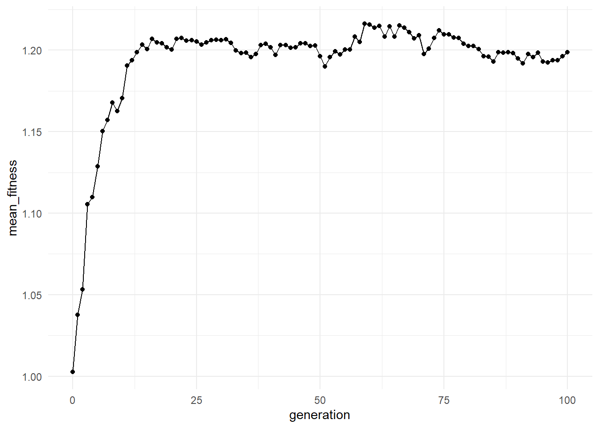

Chapter 1 Origin of Life: Big Questions
1.1 Why this question matters
The origin of life is one of the most important open questions in science. It asks how non-living matter could give rise to systems that show life-like properties such as persistence, replication, variation, heredity, metabolism, and evolution.
This question sits at the intersection of chemistry, biology, geology, physics, information theory, and complexity science. It is not only about identifying the first living organism. It is also about understanding how matter became organized enough to evolve.
A useful way to frame the problem is:
How can chemistry become biology?
1.2 Major origin-of-life theories
There is no single universally accepted theory of the origin of life. Instead, there are several major research traditions.
| Theory | Main idea | Central challenge |
|---|---|---|
| RNA World | Life began with RNA-like molecules capable of storing information and catalyzing reactions. | How did RNA-like molecules form and replicate reliably? |
| Metabolism First | Self-sustaining reaction networks emerged before genetic replication. | How did such networks become stable and evolvable? |
| Protocell First | Compartments played a central role in organizing chemistry. | How did compartments grow, divide, and preserve internal chemistry? |
| Autocatalytic Set Theory | Networks of mutually reinforcing molecules produced self-maintaining systems. | How did network organization become heritable? |
| Hybrid Models | Life emerged through coupling among molecules, compartments, energy flows, and networks. | How did these processes become integrated? |
These theories are not always mutually exclusive. A complete account may need to explain how molecular information, metabolism, compartments, and energy flow became linked.
1.3 Conceptual model
A minimal life-like system may need several ingredients:
- Variation: molecules or systems must differ.
- Persistence: some variants must last longer than others.
- Replication or reproduction: successful variants must influence future states.
- Mutation or novelty: new variants must appear.
- Selection: some variants must become more common.
- Organization: components must interact in structured ways.
In lifesimulatoR, these ideas are represented using symbolic molecules and simple simulations. The package does not attempt to reproduce real prebiotic chemistry. Instead, it provides simplified computational models for exploring the logic of origin-of-life ideas.
1.4 Package example: a simple molecular evolution simulation
The following simulation begins with a symbolic molecular population. Over repeated generations, molecules are copied, mutated, and selected according to a simplified fitness rule.
sim <- simulate_abiogenesis(
n_molecules = 100,
generations = 100,
mutation_rate = 0.02,
selection_strength = 1,
seed = 123
)
head(sim)## # A tibble: 6 × 6
## generation n_molecules mean_length mean_fitness diversity max_fitness
## <int> <int> <dbl> <dbl> <int> <dbl>
## 1 0 100 12.6 1.00 100 1.25
## 2 1 100 12.7 1.04 67 1.25
## 3 2 100 12.3 1.05 61 1.25
## 4 3 100 12.3 1.11 61 1.25
## 5 4 100 12.5 1.11 48 1.25
## 6 5 100 12.8 1.13 53 1.25The output is a time series. Each row summarizes the state of the molecular population at a generation.
Depending on the package version, the output may include variables such as:
- generation number,
- number of molecules,
- mean fitness,
- maximum fitness,
- diversity,
- mean sequence length.
1.5 Visualizing change through time

This plot helps us ask whether the molecular population shows selection-like change over time.
1.6 Interpretation of results
This simulation does not show the actual origin of life. Instead, it demonstrates a simplified principle:
If a population has variation, replication, mutation, and selection, then population-level properties can change through time.
If mean fitness increases, the toy model is showing that some molecular variants are becoming more successful under the model’s assumptions.
If diversity changes, the model is showing the balance between two opposing forces:
- mutation introduces new variants,
- selection amplifies successful variants.
In a classroom setting, this example can introduce the difference between:
- chemical randomness,
- evolutionary dynamics,
- life-like organization,
- and modern biological life.
1.7 What this model leaves out
This simplified model does not include:
- real molecular chemistry,
- RNA folding,
- energy gradients,
- thermodynamics,
- mineral surfaces,
- wet-dry cycles,
- environmental change,
- spatial structure,
- membranes or compartments,
- metabolism.
These omissions are intentional. The purpose of the model is to isolate a few basic ideas and make them easy to explore.
Later chapters introduce additional concepts such as diversity metrics, protocells, and autocatalytic networks.
1.8 How this chapter connects to the rest of the book
This chapter introduces the central problem: how non-living systems might begin to show life-like behaviour.
The next chapters explore this question from different angles:
- Prebiotic Chemistry and Molecular Pools: Where does molecular variation come from?
- Molecular Evolution: How do mutation, replication, and selection change populations?
- Diversity and Complexity: How can we measure variation and organization?
- Protocells: How can compartments create individuality?
- Autocatalytic Networks: How can systems become self-reinforcing?
1.9 Reflection questions
- Which features of life are represented in this simple simulation?
- Which features are missing?
- Could evolution begin before cells existed?
- Could selection act on molecules, compartments, or networks?
- Does increasing fitness imply increasing complexity?
- What would need to be added to make this model more chemically realistic?